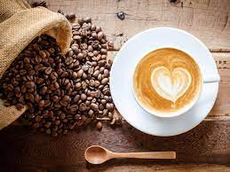

Coffee is a brewed drink prepared from roasted coffee beans, the seeds of berries from certain Coffea species. From the coffee fruit, the seeds are separated to produce a stable, raw product: unroasted green coffee
Type of Coffee
an espresso is a single shot of coffee. No extra hot water is added, resulting in an intense and flavoursome drink. An espresso shot, which forms the basis of many of the other drinks to follow, is produced by forcing hot water through finely ground coffee beans.
A Doppio is a double shot of espresso with no added hot water or milk. This results in 60 ml of coffee. Doppio means 'double' in Italian.
A ristretto, which means 'restricted' in Italian, is a shot of espresso coffee but extracted with half the amount of water. This results in a delicious, concentrated shot. A ristretto is typically enjoyed straight but it can also be combined with milk.
A long black is made by pouring a double-shot of espresso over hot water. Unlike an Americano which is made by adding hot water to the espresso shot, a long black retains the crema and is less voluminous, therefore more strongly flavoured.
Recognised by the froth on top, a cappuccino is one part espresso shot, one part textured milk and one part froth on top with a dusting of chocolate to finish.